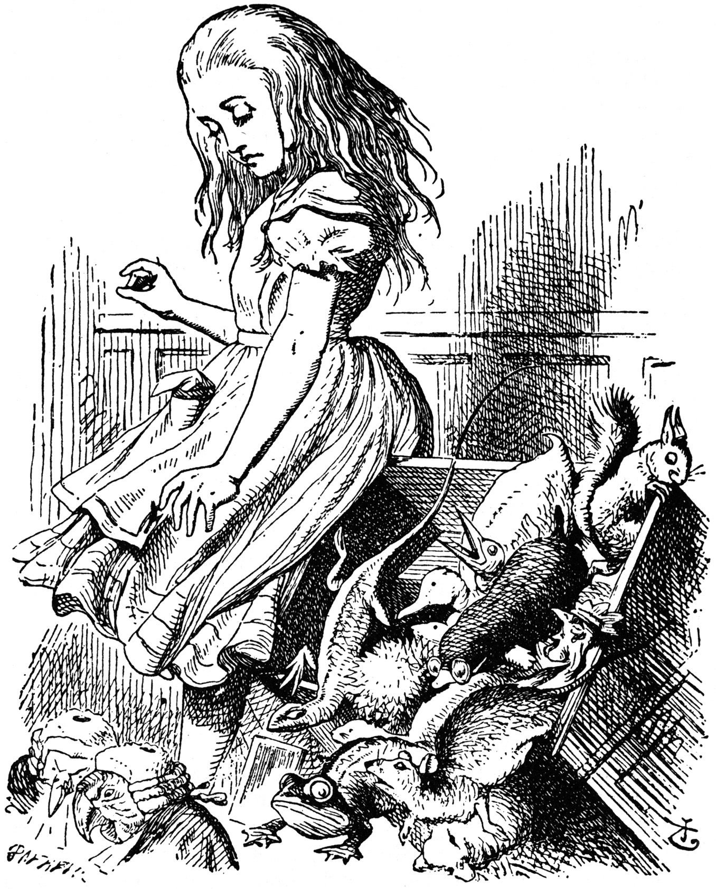
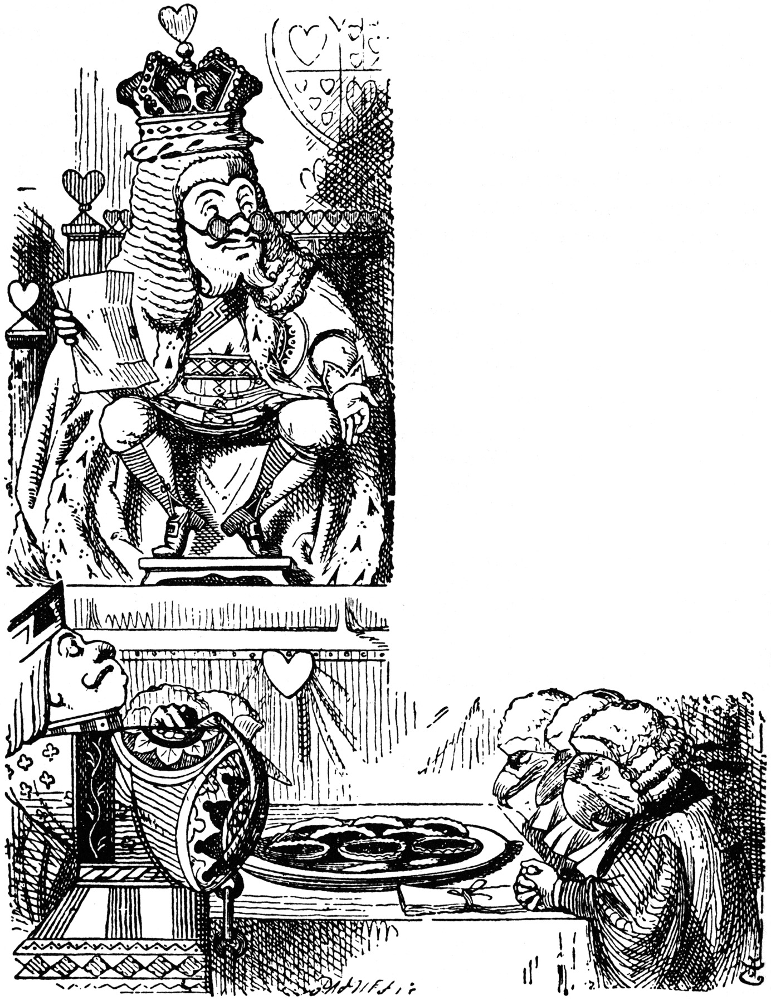
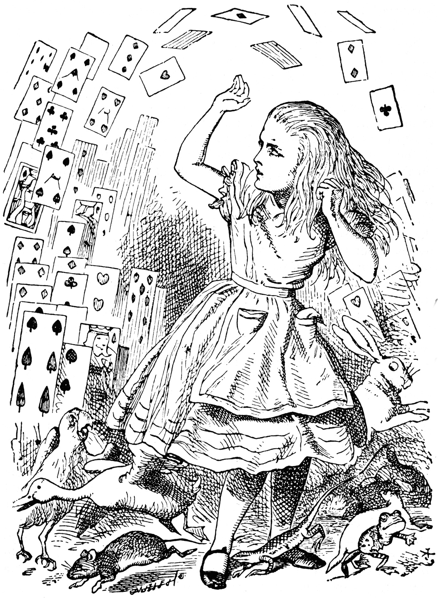

'Here!' cried Alice, quite forgetting in the flurry of the
moment how large she had grown in the last few minutes, and she
jumped up in such a hurry that she tipped over the jury-box with
the edge of her skirt, upsetting all the jurymen on to the heads
of the crowd below, and there they lay sprawling about, reminding
her very much of a globe of goldfish she had accidentally upset
the week before.

Giant Alice upsets the jury (literally)
'Oh, I beg your pardon!' she exclaimed in a tone of
great dismay, and began picking them up again as quickly as she
could, for the accident of the goldfish kept running in her head,
and she had a vague sort of idea that they must be collected at
once and put back into the jury-box, or they would die.
'The trial cannot proceed,' said the King in a very grave
voice, 'until all the jurymen are back in their proper places--
all,' he repeated with great emphasis, looking hard at
Alice as he said do.
Alice looked at the jury-box, and saw that, in her haste, she
had put the Lizard in head downwards, and the poor little thing
was waving its tail about in a melancholy way, being quite unable
to move. She soon got it out again, and put it right; 'not that
it signifies much,' she said to herself; 'I should think it would
be quite as much use in the trial one way up as the
other.'
As soon as the jury had a little recovered from the shock of
being upset, and their slates and pencils had been found and
handed back to them, they set to work very diligently to write
out a history of the accident, all except the Lizard, who seemed
too much overcome to do anything but sit with its mouth open,
gazing up into the roof of the court.
'What do you know about this business?' the King said to
Alice.
'Nothing,' said Alice.
'Nothing whatever?' persisted the King.
'Nothing whatever,' said Alice.
'That's very important,' the King said, turning to the jury.
They were just beginning to write this down on their slates, when
the White Rabbit interrupted: 'Unimportant, your Majesty
means, of course,' he said in a very respectful tone, but
frowning and making faces at him as he spoke.
'Unimportant, of course, I meant,' the King hastily
said, and went on to himself in an undertone,
'important--unimportant-- unimportant--important--' as if he were
trying which word sounded best.
Some of the jury wrote it down 'important,' and some
'unimportant.' Alice could see this, as she was near enough to
look over their slates; 'but it doesn't matter a bit,' she
thought to herself.

King reflecting in court
At this moment the King, who had been for some time busily
writing in his note-book, cackled out 'Silence!' and read out
from his book, 'Rule Forty-two. All persons more than a mile
high to leave the court.'
Everybody looked at Alice.
'I'm not a mile high,' said Alice.
'You are,' said the King.
'Nearly two miles high,' added the Queen.
'Well, I shan't go, at any rate,' said Alice: 'besides, that's
not a regular rule: you invented it just now.'
'It's the oldest rule in the book,' said the King.
'Then it ought to be Number One,' said Alice.
The King turned pale, and shut his note-book hastily.
'Consider your verdict,' he said to the jury, in a low, trembling
voice.
'There's more evidence to come yet, please your Majesty,' said
the White Rabbit, jumping up in a great hurry; 'this paper has
just been picked up.'
'What's in it?' said the Queen.
'I haven't opened it yet,' said the White Rabbit, 'but it
seems to be a letter, written by the prisoner to--to
somebody.'
'It must have been that,' said the King, 'unless it was
written to nobody, which isn't usual, you know.'
'Who is it directed to?' said one of the jurymen.
'It isn't directed at all,' said the White Rabbit; 'in fact,
there's nothing written on the outside.' He unfolded the
paper as he spoke, and added 'It isn't a letter, after all: it's
a set of verses.'
'Are they in the prisoner's handwriting?' asked another of
they jurymen.
'No, they're not,' said the White Rabbit, 'and that's the
queerest thing about it.' (The jury all looked puzzled.)
'He must have imitated somebody else's hand,' said the King.
(The jury all brightened up again.)
'Please your Majesty,' said the Knave, 'I didn't write it, and
they can't prove I did: there's no name signed at the end.'
'If you didn't sign it,' said the King, 'that only makes the
matter worse. You must have meant some mischief, or else
you'd have signed your name like an honest man.'
There was a general clapping of hands at this: it was the
first really clever thing the King had said that day.
'That proves his guilt,' said the Queen.
'It proves nothing of the sort!' said Alice. 'Why, you don't
even know what they're about!'
'Read them,' said the King.
The White Rabbit put on his spectacles. 'Where shall I begin,
please your Majesty?' he asked.
'Begin at the beginning,' the King said gravely, 'and go on
till you come to the end: then stop.'
These were the verses the White Rabbit read:--
'They told me you had been to her, And mentioned me to him:
She gave me a good character, But said I could not swim.
He sent them word I had not gone (We know it to be true):
If she should push the matter on, What would become of
you?
I gave her one, they gave him two, You gave us three or
more; They all returned from him to you, Though they were mine
before.
If I or she should chance to be Involved in this affair, He
trusts to you to set them free, Exactly as we were.
My notion was that you had been (Before she had this fit)
An obstacle that came between Him, and ourselves, and it.
Don't let him know she liked them best, For this must ever
be A secret, kept from all the rest, Between yourself and
me.'
'That's the most important piece of evidence we've heard yet,'
said the King, rubbing his hands; 'so now let the jury--'
'If any one of them can explain it,' said Alice, (she had
grown so large in the last few minutes that she wasn't a bit
afraid of interrupting him,) 'I'll give him sixpence. _I_ don't
believe there's an atom of meaning in it.'
The jury all wrote down on their slates, 'She doesn't
believe there's an atom of meaning in it,' but none of them
attempted to explain the paper.
'If there's no meaning in it,' said the King, 'that saves a
world of trouble, you know, as we needn't try to find any. And
yet I don't know,' he went on, spreading out the verses on his
knee, and looking at them with one eye; 'I seem to see some
meaning in them, after all. "-said I could not swim--" you
can't swim, can you?' he added, turning to the Knave.
The Knave shook his head sadly. 'Do I look like it?' he said.
(Which he certainly did not, being made entirely of
cardboard.)
'All right, so far,' said the King, and he went on muttering
over the verses to himself: '"We know it to be true--"
that's the jury, of course-- "I gave her one, they gave him
two--" why, that must be what he did with the tarts, you
know--'
'But, it goes on "they all returned from him to you,"'
said Alice.
'Why, there they are!' said the King triumphantly, pointing to
the tarts on the table. 'Nothing can be clearer than that.
Then again--"before she had this fit--" you never had
fits, my dear, I think?' he said to the Queen.
'Never!' said the Queen furiously, throwing an inkstand at the
Lizard as she spoke. (The unfortunate little Bill had left off
writing on his slate with one finger, as he found it made no
mark; but he now hastily began again, using the ink, that was
trickling down his face, as long as it lasted.)
'Then the words don't fit you,' said the King, looking
round the court with a smile. There was a dead silence.
'It's a pun!' the King added in an offended tone, and
everybody laughed, 'Let the jury consider their verdict,' the
King said, for about the twentieth time that day.
'No, no!' said the Queen. 'Sentence first--verdict
afterwards.'
'Stuff and nonsense!' said Alice loudly. 'The idea of having
the sentence first!'
'Hold your tongue!' said the Queen, turning purple.
'I won't!' said Alice.
'Off with her head!' the Queen shouted at the top of her
voice. Nobody moved.
'Who cares for you?' said Alice, (she had grown to her full
size by this time.) 'You're nothing but a pack of cards!'

"You're nothing but a pack of cards!"
At this the whole pack rose up into the air, and came flying
down upon her: she gave a little scream, half of fright and half
of anger, and tried to beat them off, and found herself lying on
the bank, with her head in the lap of her sister, who was gently
brushing away some dead leaves that had fluttered down from the
trees upon her face.
'Wake up, Alice dear!' said her sister; 'Why, what a long
sleep you've had!'
'Oh, I've had such a curious dream!' said Alice, and she told
her sister, as well as she could remember them, all these strange
Adventures of hers that you have just been reading about; and
when she had finished, her sister kissed her, and said, 'It
was a curious dream, dear, certainly: but now run in to
your tea; it's getting late.' So Alice got up and ran off,
thinking while she ran, as well she might, what a wonderful dream
it had been.
But her sister sat still just as she left her, leaning her
head on her hand, watching the setting sun, and thinking of
little Alice and all her wonderful Adventures, till she too began
dreaming after a fashion, and this was her dream:--
First, she dreamed of little Alice herself, and once again the
tiny hands were clasped upon her knee, and the bright eager eyes
were looking up into hers--she could hear the very tones of her
voice, and see that queer little toss of her head to keep back
the wandering hair that would always get into her
eyes--and still as she listened, or seemed to listen, the whole
place around her became alive the strange creatures of her little
sister's dream.
The long grass rustled at her feet as the White Rabbit hurried
by--the frightened Mouse splashed his way through the
neighbouring pool--she could hear the rattle of the teacups as
the March Hare and his friends shared their never-ending meal,
and the shrill voice of the Queen ordering off her unfortunate
guests to execution--once more the pig-baby was sneezing on the
Duchess's knee, while plates and dishes crashed around it--once
more the shriek of the Gryphon, the squeaking of the Lizard's
slate-pencil, and the choking of the suppressed guinea-pigs,
filled the air, mixed up with the distant sobs of the miserable
Mock Turtle.
So she sat on, with closed eyes, and half believed herself in
Wonderland, though she knew she had but to open them again, and
all would change to dull reality--the grass would be only
rustling in the wind, and the pool rippling to the waving of the
reeds--the rattling teacups would change to tinkling sheep-bells,
and the Queen's shrill cries to the voice of the shepherd
boy--and the sneeze of the baby, the shriek of the Gryphon, and
all the other queer noises, would change (she knew) to the
confused clamour of the busy farm-yard--while the lowing of the
cattle in the distance would take the place of the Mock Turtle's
heavy sobs.
Lastly, she pictured to herself how this same little sister of
hers would, in the after-time, be herself a grown woman; and how
she would keep, through all her riper years, the simple and
loving heart of her childhood: and how she would gather about her
other little children, and make their eyes bright and eager with
many a strange tale, perhaps even with the dream of Wonderland of
long ago: and how she would feel with all their simple sorrows,
and find a pleasure in all their simple joys, remembering her own
child-life, and the happy summer days.
End of the Project Gutenberg Etext of Alice's Adventures in
Wonderland
Project Gutenberg Release 2.7a of Alice in Wonderland
These electronic texts of the classics are released in the CopyLeft traditions of the Free Software Foundation and Richard M. Stallman. This means the document is to be considered under copyright, and an individual may make as may copies for self and/or friends, etc. and will be under no obligation as long as this is not commercial. Not for profit corporations and all other corporate entities are not to distribute this file for any more cost to the user than $2 and only if a disk is provided for that fee, including all shipping-handling and/or other fees associated with that disk. If this file is to be included with any other hardware, software or other material no fee may be charged for this file. If anyone finds an error, and we are sure you will, please email location of the errors to hart@uiucvmd, (BITNET) or hart@vmd.cso.uiuc.edu (INTERNET), or to Duncan Research via U.S. Mail at the address below.